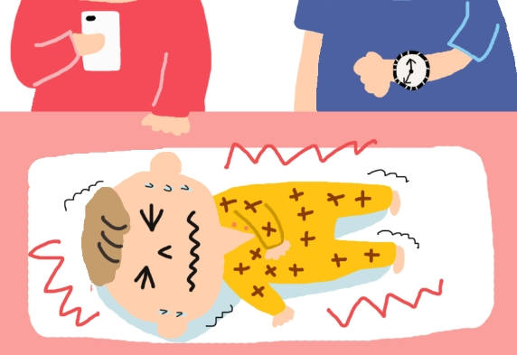

熱痙攣
成因
熱痙攣是因發燒情形而導致，孩童之體溫調節中樞尚未發育完全，當體溫過高時可能會影響到腦部不正常放電，進而發生肢體抽搐，抽搐約15分鐘內停止，此為嬰幼兒最常見之神經系統疾病，一般好發於六個月至五歲之孩童，高峰期為一歲半左右，其中導致熱痙攣原因與年齡、神經發育異常、免疫力低下、曾發生感染症狀以及家族遺傳以及有極大的相關性，年紀越小體溫調節中樞未發育成熟，當其功能失效時會導致體溫上升，則發生熱痙攣之機率越高；若父母曾發生過熱痙攣，則小孩發生率相對也越高。
熱痙攣還可分為單純性熱痙攣與複雜性熱痙攣，其中單純性熱痙攣條件為年齡位於六個月至五歲之間、抽搐時耳溫超過39度C、抽搐型態為全身性且左右對稱、抽搐時間為15分鐘內、24小時內只會發生一次抽搐，其預後良好，不會影響日後神經系統發展，且不需進行腦部影像學檢查；反之，若以上有任一條件不符合，則為複雜性熱痙攣，其日後演變成癲癇風險較高，而癲癇兒童常見睡眠品質不佳、晝夜作息不規律，進而影響平日白天之精神狀態及生活品質等，易造成癲癇症狀頻繁出現，影響孩童之認知能力及語言表現，導致出現發展遲緩現象。
症狀
熱性痙攣一般於發燒2-6小時內發作，耳溫需達38度以上，且大多在1-3分鐘內會結束，很少超過15分鐘，發生抽搐之情形大多數為全身性強直-陣攣性發作，發作時兩眼往上吊、嘴唇發紫、牙關緊閉、口吐白沫，有時也會發出類似豬羊的叫聲，四肢一陣一陣地抽動，且可能會有短暫的意識喪失，持續約5分鐘後，病童會像昏睡過去，一段時間後才漸漸醒過來，且病童對先前發生的事大都毫無記憶，這是大發作的典型症狀，此外發作後可能會有嘔吐、肌肉酸痛或嗜睡的情形。
治療
原則上不需長期服藥來預防熱性痙攣的復發，但需密切監測體溫變化，另外，若單純性熱性痙攣反覆發生、次數太過頻繁、為複雜性熱性痙攣、父母兄弟姊妹中有癲癇的病史、先前有被診斷或疑似為神經發育有問題者，如：腦性麻痺、智能障礙、發育遲緩，會由醫師來評估是否需要使用藥物來預防，一般在熱痙攣發作時可以適度退燒，減少痙攣再次發生的機率，而有熱性痙攣病史的孩童，發燒時也要及早退燒以預防痙攣發生。
影片介紹
參考資料
三軍總醫院(2023年，6月22日)．熱性痙攣治療需知。https://wwwv.tsgh.ndmctsgh.edu.tw/unit/10007/12400
吳季芳、陳筱瑋、蔡佳琦（2022）．照顧一位嬰兒感染肺炎鏈球菌及其母親之護理經驗．助產雜誌，(62)，42-51。https://doi.org/10.6518/TJOM.202205_(62).0006
張寶玲（2021年，10月19日）．熱痙攣。https://www.hch.gov.tw/?aid=626&pid=55&page_name=detail&iid=394
楊明道（2021）．『單純性熱痙攣』的兒童 不必要進行的腦部相關檢查．亞東院訊，（257）。https://www.femh.org.tw/magazine/viewmag.aspx?ID=10185
嘉義基督教醫院(2022年，6月8日)．兒童熱性痙攣。https://www.cych.org.tw/cychweb/cych3/education.aspx?menusub_id=86
臺北榮總護理部健康e點通(2022年，10月7日)．熱痙攣之照護。https://ihealth.vghtpe.gov.tw/media/1017
衛生福利部朴子醫院(2016年，4月8日)．熱性痙攣。 https://www.puzih.mohw.gov.tw/?aid=509&pid=44&page_name=detail&iid=853
衛生福利部臺北醫院(2021年，11月29日)．熱性痙攣。https://www.tph.mohw.gov.tw/?aid=801&pid=18&page_name=detail&iid=1003
Winsor, A. A., Richards, C., Bissell, S., Seri, S., Liew, A., & Bagshaw, A. P. (2021). Sleep disruption in children and adolescents with epilepsy: A systematic review and meta- analysis. Sleep Medicine Reviews, 57, Article 101416. https://doi.org/10.1016/j.smrv.2021.101416